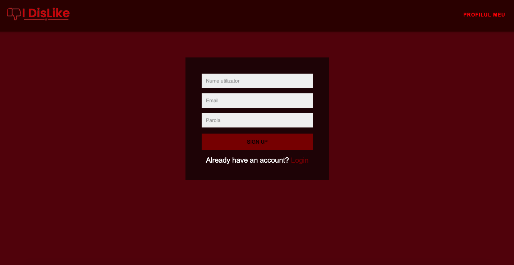
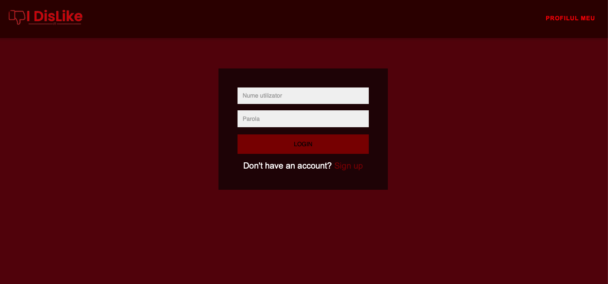
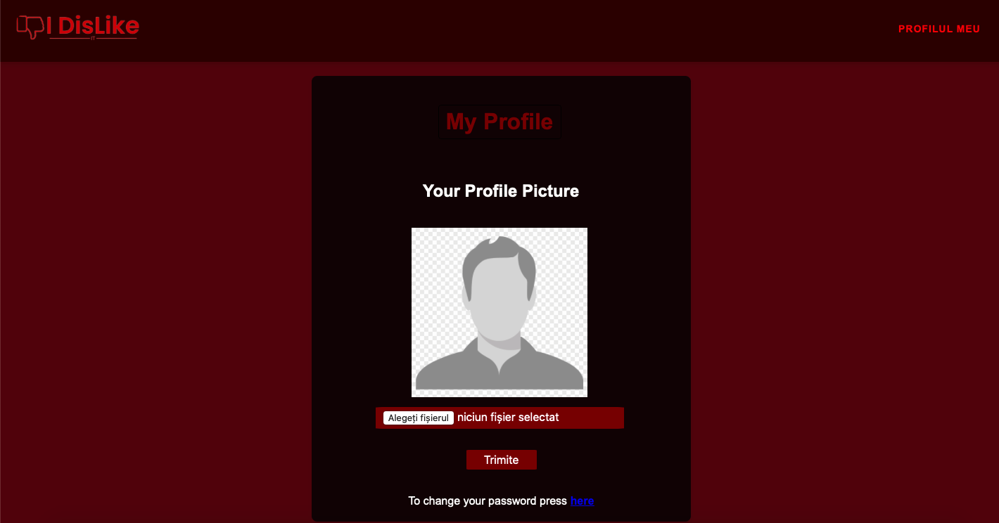
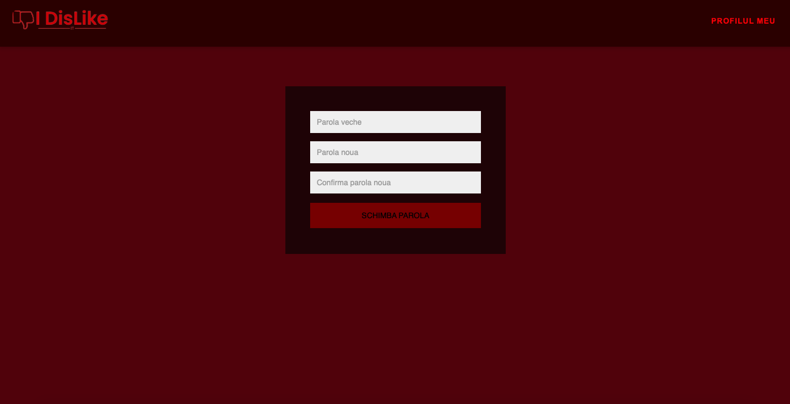
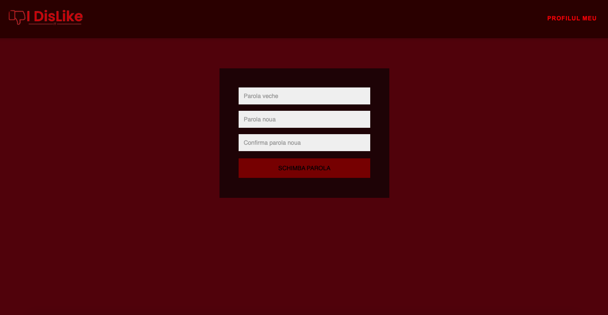
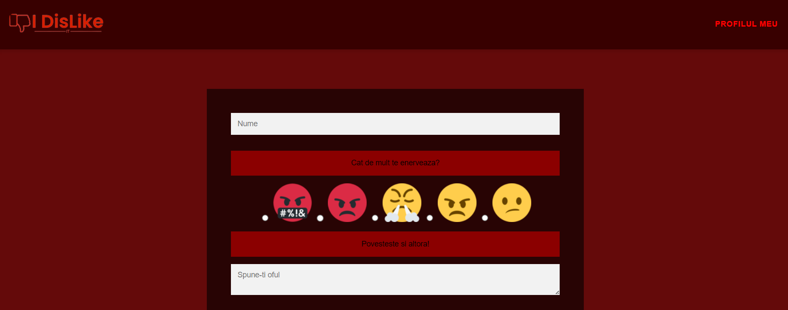
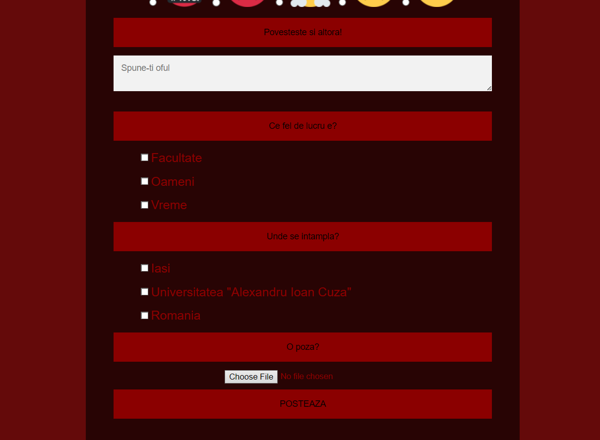
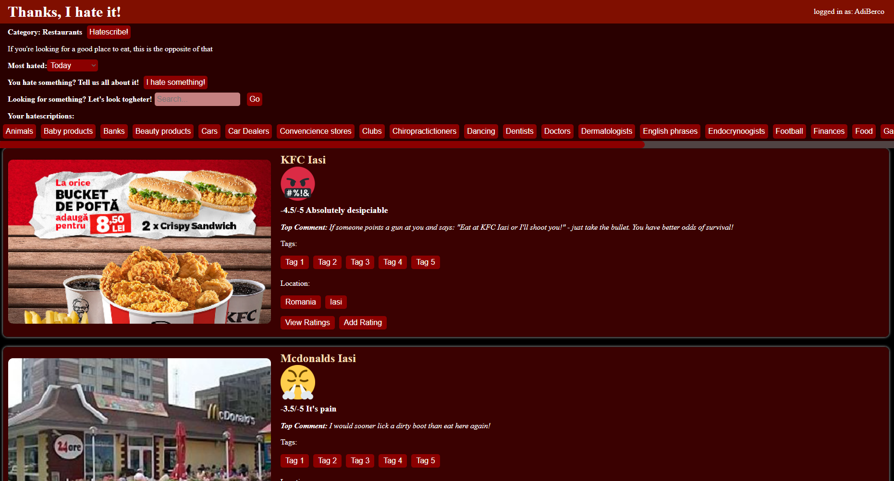
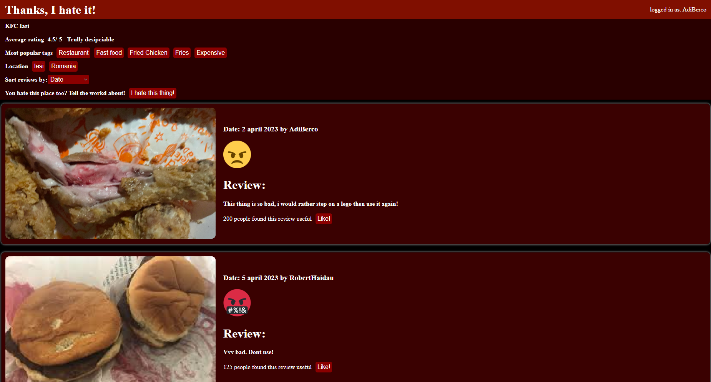

This document has the scope of a web application named "I Dislike It" developed in "Alexandru Ioan Cuza" University for the "Web Technologies" subject.
1.2 Document Conventions
While reading the present document there is no need to pay attention to any sort of special markings as it only uses the common bold text to mark importance.
1.3 Intended Audience
The document is aimed at all novice or experienced programmers that want to see the layout of the application mentioned. Refer to the "contents" sections above for ease of access.
1.4 Product Scope
The scope of the software is enabling people to find common grounds in things they hate, thus bringing them together in a "enemy of my enemy" kind of fashion.
Is may also become useful as a psychology study if enough people start using it.
The application does not aim to make any profit whatsoever, the main and only goal being passing the "Web Technologies" subject.
1.5 References
No references temporarly.
2. Overall Description
2.1 Product Perspective
The aforementioned product is a standalone, new one. No bigger projects or components.
2.2 Product Functions
The web application assures:
A way to see popular disliked things through a sortable news feed
A way to post a new disliked thing and assign it tags and a picture
An admin module to add new tags to be assigned
A rudimentary account management module
2.3 User Classes and Characteristics
Separating the potential users of out application based on age, we can define the following user classes:
Children: Unexperienced, Volatile, likely to post reviews with no basis.
Teens and Young Adults: main audience, liekly to use the application to find things to hate to let off steam or build hate groups.
Adults: Secondary Audience, likely to flock towards big communities and hate something alongside other people.
Investors and Businesses: Inevitable onlookers, likely to study trends and gather data based on most disliked things.
2.4 Operating Environment
The application will be based on the web with a database in a remote server.
2.5 Design and Implementation Constraints
Using "MySql" database and "Xampp". For external use please refer to the API we (will have) developed.
2.6 User Documentation
No user help as of now due to simplicity of application.
2.7 Assumptions and Dependencies
The only concerning fact regarding changes in components used is "MySql" or "Xampp" changing their operating policies.
3. External Interface Requirements
3.1 User Interfaces
3.1.1 Sign Up

The user may register to our website by completing the form and submitting it.
3.1.2 Login

The user may log into our website by completing the form with his credentials.
3.1.3 My Profile

In this page, the user may set his profile picture and change his current password. (More functionalities will be added)
3.1.4 Change Password

The user can change his password by confirming the old one and choosing the new one.
3.1.5 Admin Page

This page is for users with the role of admin only. The admin at this moment can create new tags, delete tags and download databases
in JSON/CSV format. (More functionalities will be added)
3.1.6 New Post Page

The user can choose a name for the thing they chose, a level of annoyance and a short description of what happened.

They can also choose tags to classify the object and the place, and can upload a picture to showcase exactly what they mean.
3.1.7 Newsfeed / category browser

This is the main page that delivers content to the user. Here the user can see items that have been disliked from all the categories that he has subscribed to,
or from a single category (i.e Restaurants, a city or country).
Each entry on this page shows the most upvoted image associated with that item, the 5 tags most widely used, an average rating and
the location tag composed of the country and city. The user can click on view ratings to see all the reviews received by that item or click on add rating to review it himself.
This page can sort the entries by popularity (how disliked they are) within a timeframe (today, this week, this month, this year, ever) and this selection is made with the dropdown at the top of
the page. The user can also view which categories he has subscribed to and click to view them.
The user can also use the search bar to look for an item or a category or place a dislike (review) something using the 'I hate something' button.
3.1.8 Reviews

This page displays the reviews (dislikes) for a single item. Each entry is a review from a user and displayes the picture uploaded by the user, how much the user disliked it
(which emoji he clicked), the description of why he disliked and how many users liked this particular review. The user can also like a review by clicking the like! button.
These reviews can be sorted either by how popular they are (how many users found them useful) or by date. The average rating is also displayed on the top of the page.
3.2 Hardware Interfaces
If Web application is not hosted, for HTML and PHP pages, as well as CSS stylesheets the applicaiton will refer to the folder in which it is situated.
If it is hosted on localhost, Xampp, the pages will be found in "htdocs" folder of Xampp.
3.3 Software Interfaces
Application will comunicate with the "MySql" database and will be hosted on localhost Xampp. There will also be a RSS feed available.
3.4 Communications Interfaces
Communication standard will be HTTPS, a REST API will also be available.
4. System Features
4.1 Dislike feed
The Dislike feed shows the most (un)popular things. The user can sort it in different ways to look for a specific category.
The posts are stored in the database, as well as the tags (categories).
The user can "hatescribe" to a subject so that they will receive posts about the given subject.
4.2 View dislikes(reviews) of an item
The user can see all the reviews of a certain item and decide whether or not a review is useful by liking it. The review contains a photo, a rating and a description
added by the original user who posted it.
The most liked review's photo and description will be displayed on the item when viewed from the newsfeed.
The rating provided by the review is factored into the average rating of the item.
4.3 Post new Dislike
In the page afferent to this functionality the user can post a new Review of something, giving it a name, annoyance level,
description and different tags to classify it. Tags are predetermined by admins. A picture can also be uploaded for better context.
The review then goes to the database and is taken into consideration when calculating the ratings of the thing it describes.
4.4 Search for an item or category
The user can search for a particular item or a category (tag or location) in the search bar.
4.5 Admin Module
A page admin can go here to add new tags to the application and export the data as CSV and JSON. The tags determined by the admin can be selected by users when creating
new posts or sorting the feed.
4.6 Account management
In the page associated to this functionality the user can modify the picture associated with their account and change their password.
The passwords, pictures and account names are stored in the database.
5. Nonfunctional Requirements
5.1 Performance Requirements
No performance requirements as of yet.
5.2 Safety Requirements
There are no safety dangers for the users of this application.
5.3 Security Requirements
A Security hazard prezent in the application is loss of anonimity, thus giving unknown third parties access to a link between the real person and their private data.
The application should be used only with HTTPS to this end.
The digital certificate needs to be renewed from time to time.
5.4 Software Quality Attributes
Important attributes for the application are portability and robustness. The application needs to be widely available and easy to use to engage as wide a demographic as possible.